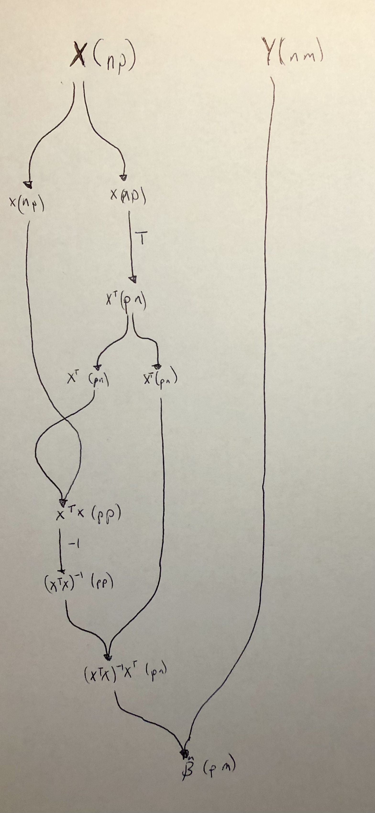

A couple of years ago, I read Conal Elliot’s Compiling to Categories paper. I thought at the time “Wow, this is amazing”, but I didn’t have the key that made the ideas concrete for me. Chris Penner’s talk on deconstructing lambdas unlocked Conal’s paper for me. In today’s post, I’m making sure I understand the basics by implementing the ordinary least squares estimator using categories.
The key idea of “Compiling to Categories” is right there in the first sentence:
As discovered by Joachim Lambek, the models of the simply typed λ-calculus (STLC) are exactly the cartesian closed categories (CCC).
In other words, programming in a cartesian closed category is programming in a simply typed λ-calculus. Or more specifically, the STLC/CCC relationship means one can program using categories and compile to any language that supports a STLC. If you’re not familiar with either the λ-calculus or category theory, that’s fine. My goal here is not to go in depth into the concepts, instead I hope my example is a teaser for statisticians to engage with category theory.
For this post I’m going write a single program for the following, a formula statisticians will be familiar with:
\(\hat{\beta} = (X^{\intercal}X)^{-1}X^{\intercal}Y.\)
Then I will compile this program into multiple target languages, namely
Haskell
and
R.
The full script for this post is in Example.hs,
and I’ve included snippets below.
A category in mathematics is comprised of
a set of objects,
a set of arrow (morphisms) between objects,
and way of composing arrows together subject to certain laws
(more details for the uninitiated here).
In Haskell, a category can be represented by a typeclass Category
where the category is parameterized the type of its arrows.
class Category k where
-- The identity morphism takes an object A and returns A
id :: a `k` a
-- The composition rule says that for any two morphisms A --> B and B --> C,
-- there exists a morphism A --> C.
-- This is encoded by a Haskell function that transforms the morphisms.
(>>>) :: a `k` b -> b `k` c -> a `k` cSimilar to equipping sets with additional structure, categories can have additional structure too. In particular, a Cartesian category comes equipped with products: a way to stick two things together into a pair and get them back out.
class Category k => Cartesian k where
exl :: (l, r) `k` l
exr :: (l, r) `k` r
(△) :: a `k` c -> a `k` d -> a `k` (c, d)The added structure that products impart is quite useful. For example, we now have a way to copy data.
copy :: (Cartesian k) => a `k` (a, a)
copy = id △ idThe cartesian structure also provides a way to swap the order of elements in a pair.
swap :: (Cartesian k) => (a, b) `k` (b, a)
swap = exr △ exlWe now have almost all the tools we need in terms of category theory.
The Strong class
provides a way of embedding morphisms within a higher-order structure
(I’m not sure where the term “strong” comes from).
Conal’s paper doesn’t use Strong (at least that I can tell),
but the utilities available once we have it are useful.
class Category k => Strong k where
first :: a `k` b -> (a, other) `k` (b, other)
second :: a `k` b -> (other, a) `k` (other, b)Those utilities are
***
(which similar to Data.Bifunctor.bimap)
and
&&&:
(***) :: (Category k, Strong k)
=> l `k` l'
-> r `k` r'
-> (l, r) `k` (l', r')
(***) l r = first l >>> second r
(&&&) :: (Cartesian k, Strong k)
=> a `k` l
-> a `k` r
-> a `k` (l, r)
(&&&) l r = copy >>> (l *** r )Since vector spaces form a category, in principle one could encode the following matrix operations in a categorical way (as linear maps). But for since I’ll be compiling to R and matrices are quite natural in R, I’m going to assume that whatever language I compile to has the following primitive matrix operations:
class MatrixPrimitives k where
transpose :: (LA.Transposable m mt) => m `k` mt
invert :: (KnownNat n, Domain f v m) => m n n `k` m n n
compose :: (KnownNat n, KnownNat p, KnownNat m) => (L m p, L p n) `k` L m nFunctions and types in Haskell form a category,
so defining morphisms is quite straightforward.
For example, >>> is function composition
(flipped from the Haskell default).
Here P is Prelude and B is Data.Bifunctor.
instance Category (->) where
id = P.id
(>>>) = P.flip (P..)
instance Cartesian (->) where
exl = P.fst
exr = P.snd
(△) f g x = (f x, g x)
instance Strong (->) where
first = B.first
second = B.secondFor matrix primitives, I use the
hmatrix package.
instance MatrixPrimitives (->) where
compose = P.uncurry (<>)
transpose = tr
invert = invI first define a type R which will contain R expressions as Text.
This type has two parameters, as Category needs to two parameters.
But these types are simply bookkeeping when we’re writing Haskell;
information in these types is not passed to R.
newtype R a b = MkR T.Text deriving (P.Eq)Now I define a way to print the R expressions and write it to a file.
instance P.Show (R a b) where
show (MkR x) = P.show x
genRcode :: R a b -> P.IO ()
genRcode (MkR x )= T.writeFile "test.R" ("catf <-" P.<> x P.<> "\n")Defining Category for R is where things start to get interesting,
but again it’s straightforward.
The id function uses R’s lambda syntax to take x and return x, unchanged.
The (>>>) operation pattern matches
on the constructor MkR expressions f and g
and returns an expression for an R function
that applies f and then g to its input.
Note: the [i||] syntax is a
string-interpolation quasiquoter.
instance Category R where
id = MkR "\\(x) x"
(>>>) (MkR f) (MkR g) = MkR [i|
function(x) {
f <- #{f}
g <- #{g}
g(f(x))
}|]The instances for Cartesion and Strong are similar.
I use list to represent a pair in R.
instance Cartesian R where
exl = MkR "\\(x) x[[1]]"
exr = MkR "\\(x) x[[2]]"
(△) (MkR f) (MkR g) = MkR [i|
function(x) {
f <- #{f}
g <- #{g}
list(f(x), g(x))
}|]
instance Strong R where
first (MkR f) = MkR [i|
function(x) {
f <- #{f}
x[[1]] <- f(x[[1]])
x
}
|]
second (MkR g) = MkR [i|
function(x) {
g <- #{g}
x[[2]] <- g(x[[2]])
x
}
|]The R MatrixPrimitives are the usual t, solve, and %*% functions.
instance MatrixPrimitives R where
transpose = MkR "function(x) { t(x) }"
invert = MkR "function(x) { solve(x) }"
compose = MkR "function(x) { x[[1]] %*% x[[2]] }"We want to express the following in a categorical way:
\(\hat{\beta} = (X^{\intercal}X)^{-1}X^{\intercal}Y.\)
Here’s a way to do that:
lmFit :: (Cartesian k, Strong k, MatrixPrimitives k
, KnownNat p, KnownNat n, KnownNat m) =>
(L n p, L n m) `k` L p m
lmFit =
first (copy
>>> second ( transpose >>> copy)
>>> ((exr >>> exl) △ exl) △ (exr >>> exl)
>>> first (compose >>> invert)
>>> compose)
>>> composeThis could surely be simplified,
but the key (for me) in writing the code above
was to first write \(\hat{\beta}\) as a
string diagram
(see image below).
The lmFit code is following along the diagram top to bottom.
I’ve included the matrix dimensions in the diagram
to make it easier to see what’s happening.

Let’s first try a simple example in Haskell by taking the average for 4 numbers. When the design matrix is a vector of ones, \(\hat{\beta}\) should simplify to the arithmetic mean. Let’s check:
x = matrix
[ 1
, 1
, 1
, 1] :: L 4 1
y = matrix
[ 2
, 1
, 0
, 2] :: L 4 1
test = lmFit (x, y)Evaluating test in a ghci session results in:
ghci> test
(1.25 :: L 1 1)Looks good. Let’s try it in R.
First we create the lmFit value for the R type.
We have to put something for the matrix dimensions.
What they are don’t matter;
they just need to conform.
r :: (L 4 1, L 4 1) `R` L 1 1
r = lmFitYou can view the result in the test.R script.
Testing it out with the same numbers as above:
> catf(list(c(1, 1, 1, 1), c(2, 1, 0, 2)))
[,1]
[1,] 1.25Neat.
I’ll end by comparing to the built-in lm with multiple regressors:
> X <- matrix(rnorm(100), ncol = 2)
> Y <- rnorm(50)
> catf(list(X, Y))
[,1]
[1,] 0.04724210
[2,] -0.01312188
> lm(Y ~ -1 + X)
Call:
lm(formula = Y ~ -1 + X)
Coefficients:
X1 X2
0.04724 -0.01312